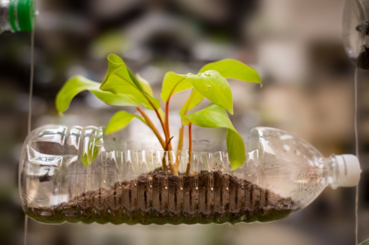
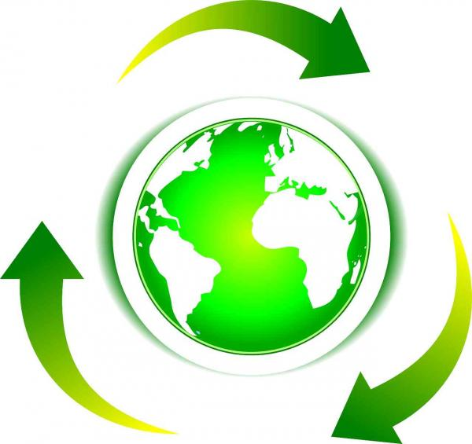

Definición de reciclaje
El reciclaje consiste en obtener una nueva materia prima o producto, mediante un proceso fisicoquímico o mecánico, a partir de productos y materiales ya en desuso o utilizados. De esta forma, conseguimos alargar el ciclo de vida de un producto, ahorrando materiales y beneficiando al medio ambiente al generar menos residuos.El reciclaje surje no sólo para eliminar residuos, sino para hacer frente al agotamiento de los recursos naturales del planeta.
El proceso del reciclaje
Todo este proceso del reciclaje, pasa por varias fases:
El reciclaje comienza en entornos industriales y domésticos, mediante la separación de los materiales. El siguiente paso consiste en la recuperación de estos materiales por las empresas públicas y privadas y su posterior traslado a las plantas de transferencia.
En estas plantas, se almacenan y compactan grandes cantidades de residuos, para su posterior transporte en grandes cantidades hacia las plantas de reciclaje, llamadas plantas clasificadoras. Es aquí cuando se hace una separación exhaustiva de los residuos. En estas plantas, encontramos en algunos casos, las plantas de valoración, o reciclador final, donde se obtienen nuevas materias o productos, se almacenan los materiales en grandes vertederos, o bien se produce energía como es el caso de las plantas de biogas.
Importancia del reciclaje
La importancia del reciclaje para nuestra sociedad actual radica en que nos permite hacer una utilización racional de recursos naturales, especialmente de los no renovables, lo cual se traduce en su preservación, la protección del medio ambiente y la disminución de la contaminación.
El reciclaje, además, se inserta dentro de un modelo ecológico de sustentabilidad, que se basa en el aprovechamiento de los recursos sin producir daños o alteraciones perjudiciales en el medio ambiente, respetando los ciclos naturales de regeneración de las materias.
Regla de las 3r: reducir
Cuando hablamos de reducir lo que estamos diciendo es que se debe tratar de reducir o simplificar el consumo de los productos directos, o sea, todo aquello que se compra y se consume, ya que esto tiene una relación directa con los desperdicios, a la vez que también la tiene con nuestro bolsillo. Por ejemplo, en vez de comprar 6 botellas pequeñas de una bebida, se puede conseguir una o dos grandes, teniendo el mismo producto pero menos envases sobre los que preocuparse.

Regla de las 3r: reutilizar
Al decir reutilizar, nos estamos refiriendo a poder volver a utilizar las cosas y darles la mayor utilidad posible antes de que llegue la hora de deshacernos de ellas, dado que al disminuir el volumen de la basura.
Esta tarea suele ser la que menos atención recibe y es una de las mas importantes, que también ayuda mucho la economía en casa.

Regla de las 3r: reciclar
La ultima de las tareas es la de reciclar, que consiste en el proceso de someter los materiales a un proceso en el cual se puedan volver a utilizar, reduciendo de forma verdaderamente significativa la utilización de nuevos materiales, y con ello, mas basura en un futuro.
Las sociedades del mundo siempre han producido residuos, pero es ahora, en la sociedad de consumo, cuando el volumen de las basuras ha crecido de forma desorbitada. Además se ha incrementado su toxicidad hasta convertirse en un gravísimo problema. Estamos inmersos en la cultura del usar y tirar, y en la basura de cada día están los recursos que dentro de poco echaremos en falta. Cada ciudadano genera por término medio 1kg. de basura al día, lo que da 365 kg. por persona al año, y a su vez 40.150.000.000 kg. al año en México. Esta basura doméstica va a parar a vertederos, barrancas, a la calle y a veces a incineradoras. Buena parte de esa basura, el 60% del volumen, lo constituyen envases y embalajes, en su mayoría de un solo uso, normalmente fabricados a partir de materias primas no renovables, o que aun siendo renovables se están explotando a un ritmo superior al de su regeneración (p. Ej. La madera para la fabricación de celulosa), y difícilmente reciclables una vez se han utilizado.

 6
6